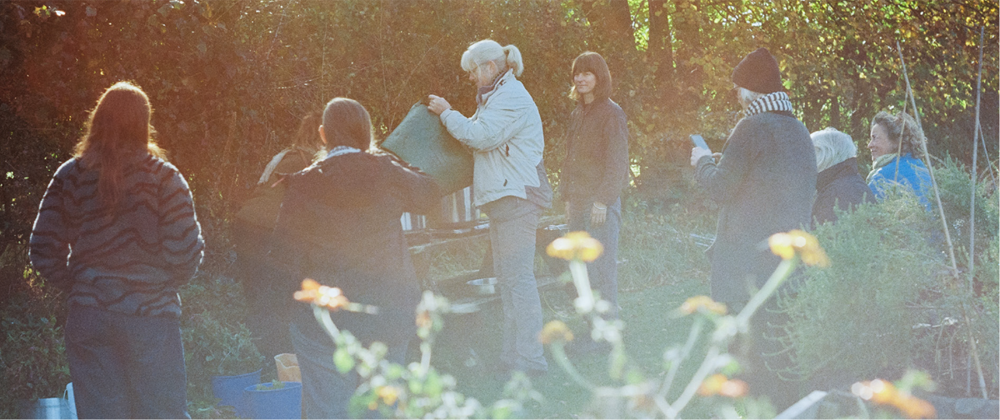
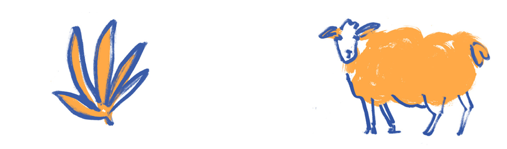
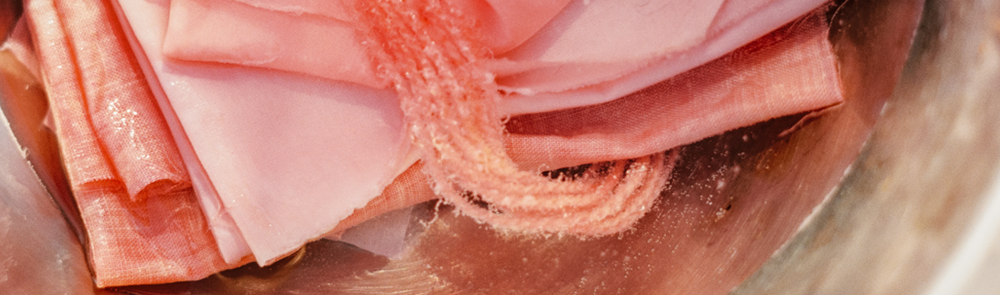
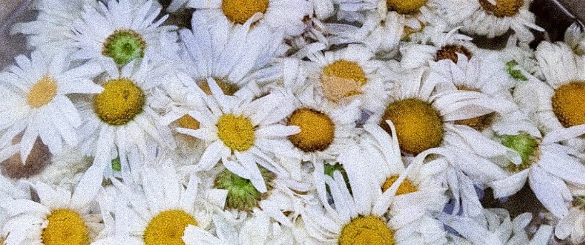
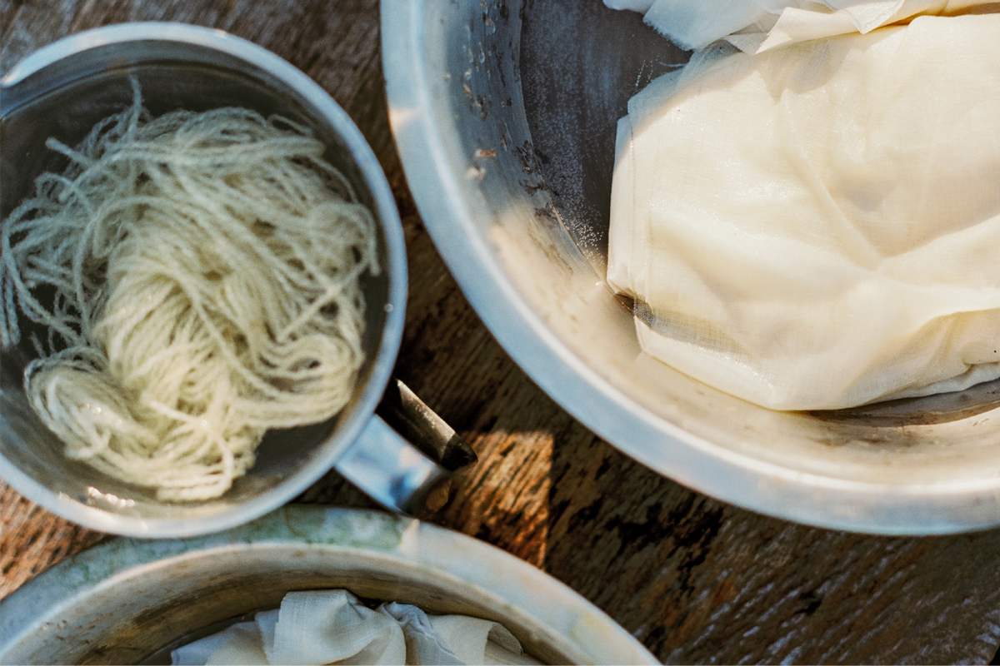
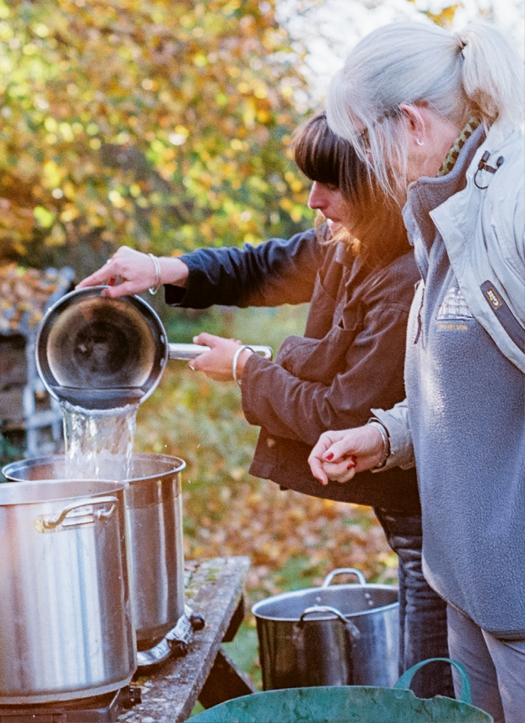

Sut i Liwio
Cafodd y ryseitiau hyn eu creu gan wirfoddolwyr yn ystod y prosiect Lliw Botanegol: Dull Redpath, gan ddefnyddio planhigion lleol a phlanhigion wedi’u hel o’r gwyllt.
Rydym wedi dewis chwe rysáit sy’n arbennig o addas i blant 8 oed a hŷn. Maent yn defnyddio planhigion sydd fel arfer yn hawdd dod o hyd iddynt ac sy’n tyfu’n helaeth.
Gallwch ddilyn y ryseitiau’n union, neu eu defnyddio fel man cychwyn. Rhowch gynnig ar blanhigion sy’n tyfu yn eich ardal, addaswch y ryseitiau i’r tymor, a gweld pa liwiau y gallwch eu darganfod.
Mae lliwio naturiol yn weithgaredd gwych i’r ystafell ddosbarth. Mae’n dod â gwyddoniaeth, mathemateg, llythrennedd, celf a chynefin at ei gilydd. Gall plant bwyso deunyddiau, mesur meintiau, arsylwi newidiadau mewn lliw a thymheredd, cofnodi canlyniadau a rhagfynegi beth allai ddigwydd nesaf.
Os yw’n bosibl, helwch blanhigion lliwio yn lleol ac anogwch y plant i sylwi ar yr hyn sy’n tyfu o’u cwmpas. Gall hyn eu helpu i gysylltu’r gweithgaredd â’r dirwedd a byd natur. Darllenwch y Canllaw Hel Planhigion yn Foesegol ac yn Ddiogel cyn casglu unrhyw blanhigion.
Mae sawl cam i liwio naturiol, felly mae’n hawdd rhannu’r broses yn sesiynau dosbarth ar wahân.
Meddyliwch amdani fel pobi cacen: paratowch eich cynhwysion, dilynwch y camau yn eu trefn, a chadwch nodiadau am yr hyn rydych wedi’i wneud.
Gallwch lawrlwytho’r Cerdyn Hel Planhigion a’r Cerdyn Rysáit i gofnodi o ble y daeth eich planhigion ac i greu a chofnodi eich ryseitiau lliwio naturiol eich hun.

Cyn Dechrau
Mae lliwio naturiol yn cynnwys planhigion, gwres a thamaid bach o gemegion. Mae rhai planhigion yn wenwynig, a gall rhai deunyddiau lliwio lidio’r croen neu’r llygaid.
Peidiwch byth â defnyddio planhigyn i liwio dim ond am ei fod yn fwytadwy.
Gwiriwch bob amser a yw planhigyn yn wenwynig cyn ei ddefnyddio. Gall rhai planhigion sy’n ddiogel i’w bwyta fod yn niweidiol wrth eu gwresogi neu eu defnyddio mewn symiau mawr. Er enghraifft, mae dail riwbob yn cynnwys asid ocsalig ac ni ddylid eu berwi i liwio.
Diogelwch
- Dylai oedolyn oruchwylio pob gweithgaredd lliwio sy’n cynnwys gwres neu gemegion.
- Gwisgwch fenig wrth drin mordantau, addasyddion a baddonau lliw.
- Gweithiwch mewn lle sydd wedi’i awyru’n dda. Mae gweithio yn yr awyr agored yn ddelfrydol.
- Peidiwch byth â defnyddio offer cegin i liwio. Cadwch botiau, llwyau, cloriannau ac offer eraill ar gyfer lliwio yn unig.
- Peidiwch â bwyta nac yfed yn yr ardal liwio.
- Cadwch fwyd, anifeiliaid anwes ac anifeiliaid eraill i ffwrdd o’r ardal liwio.
- Peidiwch ag anadlu powdrau, stêm nac anwedd.
- Byddwch yn ofalus o amgylch dŵr poeth ac offer poeth.
- Labelwch yr holl offer lliwio’n glir fel na chaiff ei ddefnyddio ar ddamwain i baratoi bwyd.
- Dilynwch gyfarwyddiadau diogelwch y gwneuthurwr ar gyfer unrhyw fordant neu addasydd a brynir.
Rydych yn gwneud pob gweithgaredd ar eich menter eich hun. Gwnewch ymchwil drylwyr i’r deunyddiau a dilynwch arferion gwaith diogel bob amser. Nid yw’r prosiect yn derbyn cyfrifoldeb am anaf, colled na difrod sy’n codi o ddefnyddio’r wybodaeth hon.
Beth Fydd Ei Angen Arnoch

Offer sylfaenol
- Pot lliwio dur gwrthstaen neu enamel
- Llwy â choes hir — ar gyfer lliwio yn unig
- Thermomedr
- Ffynhonnell wres
- Menig rwber neu nitril
- Cynhwysydd mawr neu dwb ar gyfer socian
- Cloriannau
- Jwg mesur
- Jariau gwydr neu gynwysyddion sy’n gwrthsefyll gwres ar gyfer hydoddi mordantau
- Gefel
- Labeli a phen marcio
- Llyfr nodiadau neu daflen gofnodi lliwio
Ar gyfer arbrofi â lliw
- Stribedi profi pH — defnyddiol i ymchwilio i sut gall hydoddiannau asidig ac alcalïaidd effeithio ar liw.
- Cynwysyddion neu jariau bach — defnyddiol i brofi gwahanol addasyddion ochr yn ochr.
- Llwyau te — ar gyfer ychwanegu symiau bach o addasydd.
Gellir defnyddio potiau alwminiwm a chopr ar gyfer arbrofion hefyd. Gall metelau gwahanol effeithio ar liwiau naturiol, felly gallant greu lliwiau gwahanol. Ond i gael canlyniadau cyson, rydym yn argymell dur gwrthstaen neu enamel.
Deall WOF
Byddwch yn gweld WOF drwy’r ryseitiau hyn.
Mae WOF yn golygu Pwysau’r Ffibr (Weight of Fibre). Mae’n ffordd syml o gyfrifo faint o blanhigyn, mordant neu gynhwysyn arall sydd ei angen o’i gymharu â phwysau’r ffibr sy’n cael ei liwio. Yn gyntaf, pwyswch y ffibr pan fydd yn hollol sych.
Y cyfrifiad
Er enghraifft
Os yw eich ffibr sych yn pwyso 100 g a bod y rysáit yn gofyn am 10% WOF:
100 g × 10 ÷ 100 = 10 g
Felly, byddech yn defnyddio 10 g o’r cynhwysyn.
Os yw eich ffibr yn pwyso 250 g:
250 g × 10 ÷ 100 = 25 g
Eich tro chi
| Ffibr sych | WOF | Swm sydd ei angen |
|---|---|---|
| 50 g | 10% | 5 g |
| 100 g | 10% | 10 g |
| 250 g | 10% | 25 g |
Pwysig: Pwyswch y ffibr pan fydd yn sych bob amser. Gall ffibr gwlyb ddal llawer o ddŵr. Bydd hyn yn rhoi mesuriad llawer trymach ac felly’n anghywir.
Pedwar Cam Lliwio Naturiol
Mae’r rhan fwyaf o’r ryseitiau yn yr adnodd hwn yn dilyn pedwar cam sylfaenol:
Sgwrio
golchi’r ffibr
Mordantu
paratoi’r ffibr i dderbyn y lliw
Lliwio
ychwanegu lliw
Rinsio a sychu
golchi a datgelu’r lliw terfynol
Rhwng y camau, cadwch y ffibr yn wlyb os yw’n bosibl. Os yw wedi sychu, sociwch ef mewn dŵr glân am o leiaf awr cyn parhau. Mae hyn yn helpu’r ffibrau i wlychu’n llwyr ac yn helpu’r driniaeth nesaf i’w cyrraedd yn gyfartal.
1. Sgwrio: Paratoi’r Ffibr
Cyn lliwio, rhaid glanhau’r ffibrau’n drylwyr. Mae sgwrio’n cael gwared ar olew, baw, llwch a haenau gorffen a allai fod wedi’u hychwanegu wrth weithgynhyrchu. Mae ffibr glân yn helpu’r lliw i gyrraedd y ffibrau’n gyfartal.
Bydd angen
- Ffibr sych
- Dŵr
- Lludw soda
- Pot lliwio
Dull
- Pwyswch eich ffibr sych a chofnodwch y pwysau.
- Rhowch y ffibr mewn cynhwysydd mawr a’i orchuddio â dŵr.
- Gadewch iddo socian am o leiaf 1 awr.
- Llenwch bot lliwio â digon o ddŵr i’r ffibr symud yn rhydd.
- Ychwanegwch tua 1 llwy de o ludw soda am bob litr o ddŵr.
- Trowch nes iddo hydoddi.
- Ychwanegwch y ffibr gwlyb.
- Cynheswch y baddon yn araf i tua 85°C.
- Cadwch ef ar y tymheredd hwn am 1 awr.
- Symudwch y ffibr yn ysgafn ac yn rheolaidd. Agorwch blygiadau a swigod yn ofalus.
- Diffoddwch y gwres a gadewch i’r ffibr oeri.
- Rinsiwch yn drylwyr mewn dŵr glân.
- Gall y ffibr gael ei sychu nawr neu fynd yn syth i’r cam mordantu.
2. Mordantu
Sylwedd yw mordant sy’n helpu cyfansoddion lliw naturiol i lynu wrth ffibrau. Gall hefyd newid y lliw a gynhyrchir.
Rydym yn defnyddio sylffad potasiwm alwminiwm (alwm) fel ein prif fordant. Rydym yn dilyn dull Margaret Redpath, sy’n defnyddio llai o ddeunydd: 10% WOF.
Gellir mordantu ffibrau protein fel gwlân a sidan yn uniongyrchol ag alwm. Mae angen triniaeth tannin ychwanegol ar ffibrau cellwlos o blanhigion, fel cotwm a lliain, cyn y baddon alwm.
Beth yw ffibr?

Ffibrau cellwlosFfibrau cellwlos
Daw ffibrau cellwlos o blanhigion.
Mae enghreifftiau’n cynnwys:
- Cotwm
- Lliain
- Cywarch
- Llin
- Ramie
- Fiscos bambŵ a ffibrau cellwlos wedi’u hadfywio eraill
Ffibrau protein
Daw ffibrau protein o anifeiliaid.
Mae enghreifftiau’n cynnwys:
- Gwlân
- Sidan
- Cashmir
- Alpaca
- Mohêr
Pam Mae Angen Tannin ar Ffibrau Cellwlos?
Nid yw alwm yn glynu wrth ffibrau cellwlos mor effeithiol ag y mae’n glynu wrth ffibrau protein. Felly, gyda ffibrau cellwlos, rydym yn defnyddio tannin yn gyntaf.
Mae moleciwlau tannin yn glynu wrth y ffibr cellwlos. Yna gall yr alwm ryngweithio â’r tannin. Mae hyn yn creu arwyneb sy’n derbyn llawer o liwiau naturiol yn well.
Meddyliwch am y tannin fel pont rhwng y ffibr planhigyn a’r mordant.
Yn yr adnodd hwn, rydym yn defnyddio tannin afal derw, os yw ar gael o ffynhonnell gyfrifol.

Mordantu Ffibrau Cellwlos
Cam 1: Tannin
Bydd angen
- Cotwm neu liain wedi’i sgwrio
- Tannin afal derw
- Dŵr
- Pot lliwio
- Jar wydr
- Cloriannau
Rydym yn defnyddio tannin afal derw ar 7% WOF.
Dull
- Gwnewch yn siŵr bod eich ffibr wedi’i sgwrio’n drylwyr.
- Os yw wedi sychu, sociwch ef mewn dŵr glân am o leiaf 1 awr.
- Pwyswch dannin afal derw ar 7% WOF.
- Rhowch y tannin mewn jar wydr.
- Ychwanegwch ychydig o ddŵr cynnes a’i droi nes ei fod wedi gwasgaru’n dda.
- Llenwch bot lliwio â digon o ddŵr i’r ffibr symud yn rhydd.
- Ychwanegwch y cymysgedd tannin a’i droi.
- Ychwanegwch y ffibr gwlyb.
- Cynheswch yn ysgafn i tua 85°C.
- Cadwch ef ar y tymheredd hwn am tua 90 munud, gan symud y ffibr yn rheolaidd.
- Diffoddwch y gwres a gadewch i’r ffibr oeri.
- Rinsiwch y ffibr yn ysgafn unwaith mewn dŵr glân. Peidiwch â rinsio gormod ar y cam hwn. Rydym am gadw’r tannin ynghlwm wrth y ffibr. Gall y ffibr gael ei sychu nawr neu fynd yn syth i’r baddon alwm.

Cam 2: Alwm
Rydym yn defnyddio sylffad potasiwm alwminiwm (alwm) ar 10% WOF, gan ddilyn dull Margaret Redpath sy’n defnyddio llai o ddeunydd.
Dull
- Pwyswch alwm ar 10% WOF.
- Llenwch bot lliwio â digon o ddŵr i’r ffibr symud yn rhydd.
- Rhowch yr alwm mewn jar wydr.
- Ychwanegwch ychydig o ddŵr poeth a’i droi i hydoddi cymaint â phosibl.
- Ychwanegwch y cymysgedd at y pot lliwio a’i droi.
- Ychwanegwch y ffibr gwlyb.
- Cynheswch y baddon i tua 85°C.
- Diffoddwch y gwres.
- Gorchuddiwch y pot i gadw’r gwres i mewn.
- Gadewch y ffibr yn y baddon am tua 90 munud. Symudwch ef yn ysgafn o bryd i’w gilydd.
- Tynnwch y ffibr allan a gadewch iddo oeri.
- Rinsiwch yn ysgafn mewn dŵr glân.
- Gall y ffibr gael ei liwio nawr neu ei hongian i sychu.
Mordantu Gwlân a Sidan
Mae gwlân a sidan yn ffibrau protein a gellir eu mordantu’n uniongyrchol ag alwm.
Dull
- Sgwriwch y ffibr.
- Gadewch iddo oeri.
- Os yw’r ffibr wedi sychu, sociwch ef mewn dŵr glân am o leiaf 1 awr.
- Cyfrifwch alwm ar 10% WOF.
- Hydoddwch yr alwm mewn ychydig o ddŵr poeth.
- Ychwanegwch yr hydoddiant at bot lliwio sydd â digon o ddŵr i’r ffibr symud yn rhydd.
- Ychwanegwch y ffibr gwlyb.
- Cynheswch i tua 85°C.
- Gadewch am tua 90 munud, gan symud y ffibr yn ysgafn o bryd i’w gilydd.
- Tynnwch y ffibr allan a’i rinsio’n ysgafn.
- Mae’r ffibr yn barod i’w liwio.
Pwysig: Gall gwlân ffeltio os yw’r tymheredd yn newid yn sydyn neu os caiff ei drin yn arw. Symudwch ef yn ysgafn ac osgoi ei gynhesu neu ei oeri’n gyflym.
Lliwio
Nawr daw’r rhan gyffrous: ychwanegu lliw. Mae sawl ffordd o dynnu lliw o blanhigion. Mae’r ryseitiau yn yr adnodd hwn yn defnyddio dau ddull syml.

Dull 1: Tynnu Lliw â Gwres
Mae hwn yn ddull syml ar gyfer llawer o blanhigion ffres neu sych.
Dull
- Pwyswch eich ffibr sych a chofnodwch y pwysau.
- Paratowch y planhigyn yn ôl y rysáit unigol.
- Rhowch y planhigyn mewn pot lliwio.
- Ychwanegwch ddigon o ddŵr i’r ffibr symud yn rhydd.
- Cynheswch yn ysgafn i tua 80–90°C.
- Gadewch i’r planhigyn ryddhau ei liw am tua 60–90 munud.
- Hidlwch y planhigyn allan os yw’r rysáit yn gofyn am hynny.
- Ychwanegwch eich ffibr gwlyb sydd wedi’i fordantu.
- Cadwch y baddon lliw yn boeth, ond peidiwch â’i ferwi’n gryf.
- Symudwch y ffibr yn ysgafn ac yn rheolaidd fel bod y lliw’n lledaenu’n gyfartal.
- Parhewch nes bod y ffibr wedi cyrraedd y lliw rydych ei eisiau.
- Tynnwch y ffibr allan a gadewch iddo oeri.
- Rinsiwch yn ysgafn mewn dŵr glân.
- Hongiwch i sychu.
Dull 2: Ail-liwio a Newid Lliw
Un o’r pethau mwyaf cyffrous am liwiau naturiol yw bod modd newid y lliw weithiau ar ôl lliwio.
Addasu yw’r enw ar hyn.
Mae addasydd yn newid yr amgylchedd cemegol o amgylch y lliw. Mae rhai cyfansoddion lliw naturiol yn ymateb i newidiadau mewn pH — sef mesur pa mor asidig neu alcalïaidd yw hydoddiant. Mae addasyddion eraill, fel haearn, yn adweithio’n uniongyrchol â’r cyfansoddion lliw. Mae hyn yn golygu y gall yr un planhigyn greu sawl lliw gwahanol weithiau.
Meddyliwch amdano fel hyn
Mae lliwiau gwahanol yn ymateb yn wahanol i’r raddfa hon.
- Mae addasyddion asidig yn gostwng y pH.
- Mae addasyddion alcalïaidd yn codi’r pH.
- Mae addasyddion haearn yn rhyngweithio â’r lliw. Gallant wneud lliwiau’n dywyllach, yn llai llachar neu’n fwy tawel.
Nid yw pob planhigyn yn newid lliw yn yr un ffordd. Prin y mae rhai lliwiau’n newid, ond gall eraill newid yn fawr.
Addasyddion Cyffredin
Asidig: Asid Sitrig
Gall addasydd asidig wneud rhai lliwiau naturiol yn fwy llachar neu eu newid, yn enwedig lliwiau sy’n sensitif i pH. Asid ar ffurf powdr yw asid sitrig, a rhaid ei drin yn ofalus.
Pwysig: Bydd cryfder yr hydoddiant a’r amser yn dibynnu ar y lliw. Dechreuwch bob amser gyda hydoddiant gwan a darn prawf bach.
Dull
- Gwnewch hydoddiant gwan o asid sitrig mewn dŵr cynnes.
- Rhowch eich ffibr wedi’i liwio a’i rinsio yn yr hydoddiant.
- Gadewch am ychydig funudau.
- Gwyliwch yn ofalus am newidiadau lliw.
- Tynnwch y ffibr allan pan fydd wedi cyrraedd y lliw rydych ei eisiau.
- Rinsiwch yn drylwyr mewn dŵr glân.
- Sychwch a chofnodwch eich canlyniad.
Alcalïaidd: Lludw Soda
Sylwedd alcalïaidd yw lludw soda. Gall codi’r pH newid rhai lliwiau naturiol. Yn dibynnu ar y lliw, gallant edrych yn ddyfnach, yn llai llachar, yn gynhesach neu’n fwy melyn neu wyrdd.
Gan fod lliwiau gwahanol yn ymateb yn wahanol, nid oes un canlyniad lliw sy’n wir bob tro.
Dull
- Hydoddwch ychydig o ludw soda mewn dŵr cynnes.
- Rhowch eich ffibr wedi’i liwio a’i rinsio yn yr hydoddiant.
- Gadewch am ychydig funudau.
- Gwyliwch y lliw yn ofalus.
- Tynnwch y ffibr allan pan fydd wedi cyrraedd y lliw rydych ei eisiau.
- Rinsiwch yn drylwyr mewn dŵr glân.
- Sychwch a chofnodwch eich canlyniad.
Haearn: Addasydd Lliw Cryf
Mae haearn yn wahanol i addasyddion asidig ac alcalïaidd. Gall adweithio â chyfansoddion lliw naturiol ac mae’n aml yn tywyllu neu’n “tawelu” lliwiau. Gall greu gwyrddion, llwydion, browniau a lliwiau siarcol dyfnach. Mae haearn hefyd yn adweithio’n gryf â thanninau.
Gall haearn fod yn llawer cryfach nag addasyddion eraill, a gall niweidio ffibrau os defnyddir gormod ohono. Felly, defnyddiwch hydoddiant gwan iawn ac am gyfnod byr.

Diogelwch
Mae sylffad haearn yn niweidiol os caiff ei lyncu a gall lidio’r croen a’r llygaid. Mewn gweithgareddau dosbarth, dylai oedolyn baratoi’r hydoddiant a goruchwylio ei ddefnydd. Gwisgwch fenig ac amddiffyniad llygaid, osgowch gyswllt â’r croen a’r llygaid, a chadwch y powdr a’r hydoddiant oddi wrth blant.
Peidiwch byth â llyncu deunyddiau lliwio haearn na defnyddio offer lliwio i baratoi bwyd.
Dull
- Paratowch addasydd haearn gwan iawn yn unol â chyfarwyddiadau’r gwneuthurwr.
- Tynnwch y ffibr wedi’i liwio allan o’i faddon lliw.
- Rhowch ef yn y baddon haearn.
- Gwyliwch y lliw yn ofalus — gall newidiadau ddigwydd yn gyflym.
- Tynnwch y ffibr allan ar ôl cyfnod byr.
- Rinsiwch yn drylwyr.
- Sychwch a chofnodwch y canlyniad.
Pwysig: Peidiwch â gadael ffibrau mewn hydoddiannau haearn cryf am gyfnodau hir. Gall haearn wanhau ffibrau, yn enwedig pan gaiff ei ddefnyddio mewn crynodiadau uchel.
Cofnodwch Eich Canlyniadau
Arbrawf yw lliwio naturiol.
Cofnododd Margaret a David Redpath eu darganfyddiadau, eu harsylwadau a’u ryseitiau yn fanwl. Drwy gadw cofnodion gofalus, gallent adeiladu eu gwybodaeth dros amser a deall sut roedd planhigion, ffibrau a phrosesau gwahanol yn effeithio ar y lliwiau.
Ceisiwch gofnodi cymaint ag y gallwch wrth weithio. Bydd eich nodiadau’n eich helpu i gymharu canlyniadau, gweld patrymau a dysgu o’ch arbrofion.
Ar gyfer pob baddon lliw, cofnodwch:
- Y planhigyn a ddefnyddiwyd
- O ble y daeth
- Y dyddiad casglu
- A oedd yn ffres neu’n sych
- Faint o blanhigyn a ddefnyddiwyd
- Pwysau’r ffibr
- Math o ffibr
- Y mordant a ddefnyddiwyd
- Swm y mordant
- Tymheredd
- Hyd yr amser lliwio
- Yr addasydd a ddefnyddiwyd
- Y lliw terfynol
- Unrhyw beth annisgwyl

Gallwch hefyd atodi eich sampl ffibr i’r cerdyn rysáit a rhoi enw i’ch lliw.
Beth Wnaethoch Chi ei Ddarganfod?
Ceisiwch ofyn:
- Beth newidiodd?
- Beth arhosodd yr un fath?
- Beth, yn eich barn chi, achosodd y gwahaniaeth?
- Beth fyddech chi’n ei newid y tro nesaf?
Dyma pryd mae lliwio naturiol yn dod yn fwy na chreu lliw yn unig — mae’n dod yn ffordd o ymchwilio i fyd natur.

Nodyn am Liw
Anaml iawn y mae lliwio naturiol yn creu’r un lliw yn union ddwywaith.
Gall y pethau hyn effeithio ar y lliw:
- Rhywogaeth y planhigyn
- Lle tyfodd y planhigyn
- Y pridd a’r tywydd
- Yr adeg o’r flwyddyn y cafodd ei gasglu
- A oedd yn ffres neu’n sych
- Faint o blanhigyn a ddefnyddiwyd
- Math o ffibr
- Y mordant
- Y tymheredd
- Hyd yr amser yn y baddon lliw
- Y dŵr a ddefnyddiwyd
- pH y baddon lliw
Mae’r amrywiaeth hon yn rhan o’r broses.
Nid oes lliw “anghywir”.
Yn hytrach, cofnodwch beth ddigwyddodd a gofynnwch pam.
Rydym wedi cynnwys chwe rysáit lliwio sy’n hawdd eu hail-greu gan ddefnyddio deunyddiau planhigion sy’n helaeth ac yn hawdd eu cael. Mae’r rhain yn cynnwys planhigion lleol o’r DU yn ogystal â deunyddiau sy’n weddillion bwyd, fel croen afocado a chroen nionyn.
Nid yw rhai o’r planhigion a ddefnyddir ar gyfer lliwio yn fwytadwy, a gallant achosi llid neu effeithiau niweidiol eraill os cânt eu trin yn anghywir. Darllenwch ein Canllaw Casglu Bwyd Gwyllt yn Foesegol ac yn Ddiogel cyn casglu neu drin unrhyw ddeunydd planhigion, a dilynwch yr arweiniad ar adnabod, casglu’n gyfrifol a thrin yn ddiogel.
Ysgrifennwyd gan Abi Makepeace. Darluniau a dyluniad gan Aurelia Lange; ffotograffau a gynhyrchwyd fel rhan o Botanical Colour: The Redpath Way. Gwnaed Botanical Colour: The Redpath Way yn bosibl gyda chyllid gan Gronfa Treftadaeth y Loteri Genedlaethol.